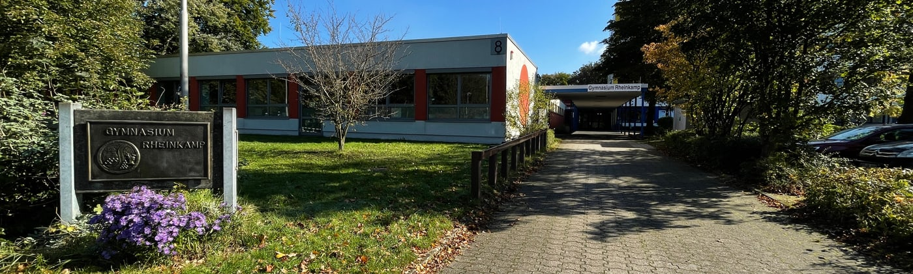

🏫 Ganztag
 Das GREM als Ganztagsschule – Mehr als nur Unterricht
🎯 Unser Ziel
Als Ganztagsgymnasium verbinden wir am GREM bereits seit mehr als zehn Jahren erfolgreich schulisches Lernen und individuelle Schülerinteressen.
Unser Ziel ist es, unseren Schüler*innen weitaus mehr als die reine Vermittlung von Wissen zu ermöglichen und sie im Rahmen unserer Angebote in ihrer Persönlichkeitsentwicklung zu fördern, sie zu sozialem und eigenverantwortlichem Handeln anzuleiten und bei der Entwicklung eines aktiven Freizeitverhaltens zu unterstützen.
🗓️ Struktur des Ganztages
Im Bildungsgang G9 bietet das GREM an drei Nachmittagen in der Woche ein Unterrichts-, Förder-, Forder- und Freizeitangebot an. Das im Stundenplan fest verankerte Doppelstundenprinzip überfrachtet auch lange Tage nicht, sondern schafft ausreichend Freiraum zum Lernen, Anwenden und Vertiefen.
In zusätzlichen Lernzeiten (LZ) am Vormittag, die in den Kernfächern durch unsere Fachkolleginnen begleitet werden, unterstützen wir die Schülerinnen weiter in ihrem individuellen Lernprozess. Ergänzend dazu ermöglichen das Fach „Lernen des Lernens“ (LdL), das genau wie das Fach Informatik (Info) bereits in Klasse 5 unterrichtet wird, die besonderen Förder- und Forderangebote in kleinen Lerngruppen (FuF, FöFo) sowie die freie Projektarbeit der „Cleverixe“, der Begabtenförderung ab Klasse 6, nachhaltige, individualisierte Lernangebote.
Die Mittagspause bietet ausreichend Raum zur freien Gestaltung: ob beim frisch zubereiteten Mittagessen in unserer gut ausgestatteten Mensa, beim Spielen und Bewegen im Freien oder unter der Anleitung älterer Schülerinnen (Sporthelfer), bei Ruhephasen im Raum der Stille oder beim gemeinsamen Spiel unterstützt durch die Spieleausleihe oder Kreativangebote (z.B. Basteln mit älteren Schülerinnen); hier ist genügend Zeit für Erholung.
🤝 Arbeitsgemeinschaften
Unsere AGs am Nachmittag überzeugen durch ihr breit gefächertes Angebot und werden den vielfältigen Schülerinteressen und Neigungen gerecht. Gemeinsam mit unseren außerschulischen Kooperationspartnern ist es uns gelungen, Angebote im musikalischen, sportlichen, künstlerischen und naturwissenschaftlichen Bereich anzubieten wie z. B. Theater (Young Soon), Tennis, Yoga, Künstlerisches Gestalten sowie Roboter und Garten.
🧾 Ganztag auf einen Blick
in Klasse 5 und 6: drei Ganztage bis 15:00 bzw. 15:45 Uhr und zwei „kurze Tage“
bei Bedarf: verlässliche Betreuung bis 15.45 Uhr auch an „kurzen Tagen“